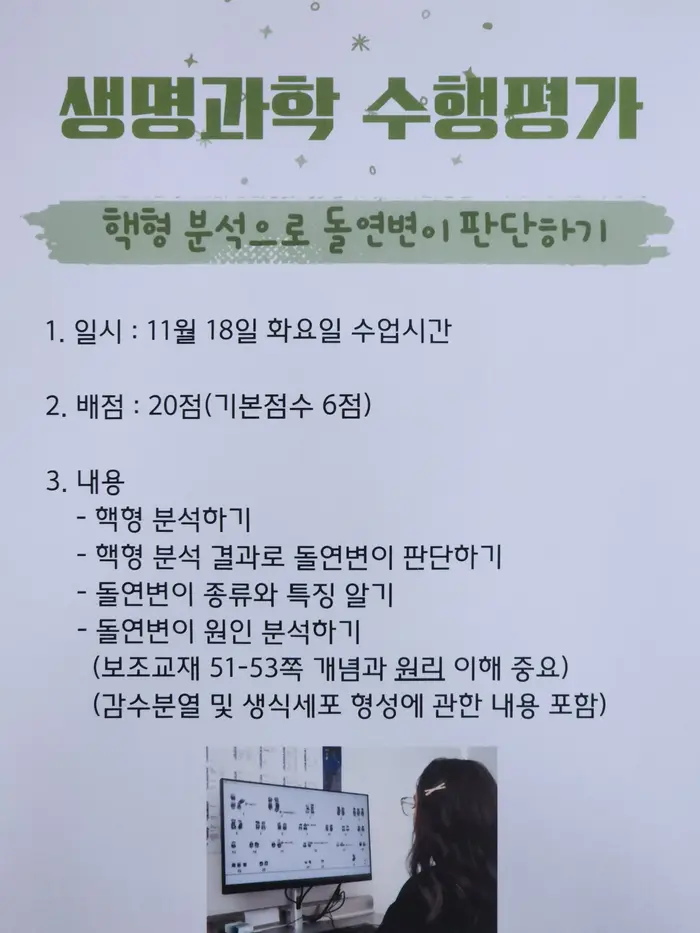
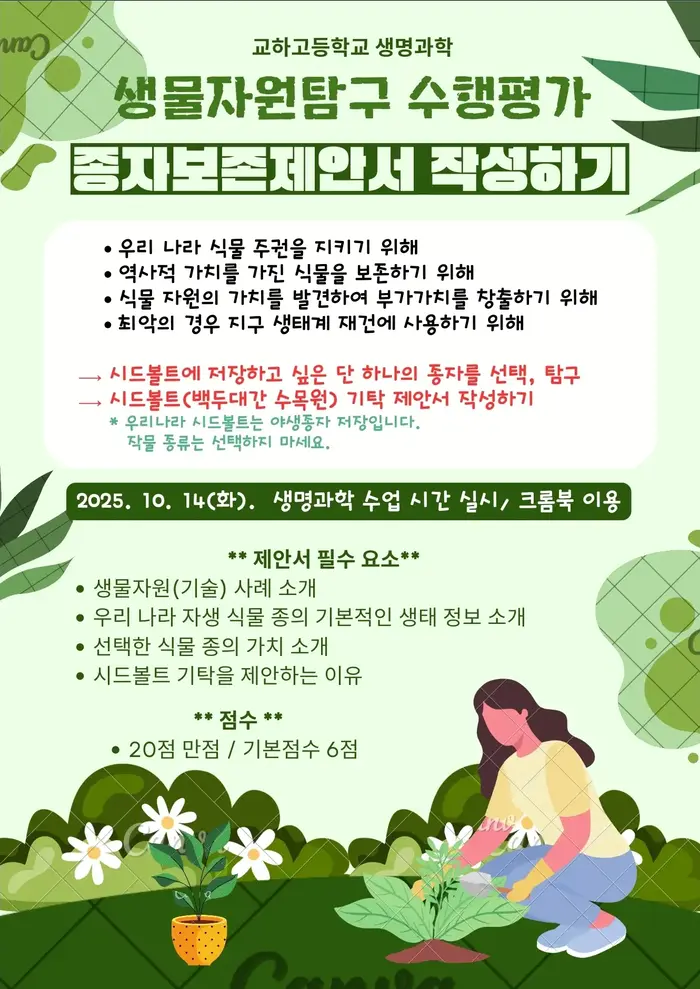

{% extends "base.html" %}
{% block content %}
    <h1 data-content="생명과학 I">
        생명과학 I
    </h1>
    <h4 data-content="현재 진행중 · 예정된 수행평가">
        현재 진행중 · 예정된 수행평가
    </h4>
    <h3>모든 수행평가가 완료되었습니다!</h3>
    <details>
        <summary>
            완료된 생명과학 I 수행평가 보기 [ 펼치기 · 접기 ]
        </summary>
        <li>핵형 분석으로 돌연변이 판단하기</li>
        
        <li>종자보존제안서 작성하기</li>
        
        <li>세포 주기와 세포 분열 탐구 자료 해석하기</li>
        
        <li>탐구활동 자료해석하기</li>
        
        <li>대사성 질환 예방 프로젝트</li>
        
        <li>독서를 통한 심화 주제 탐구</li>
        <br>
        
    </details>
    <button onclick="location.href='/'">홈으로</button>
{% endblock %}